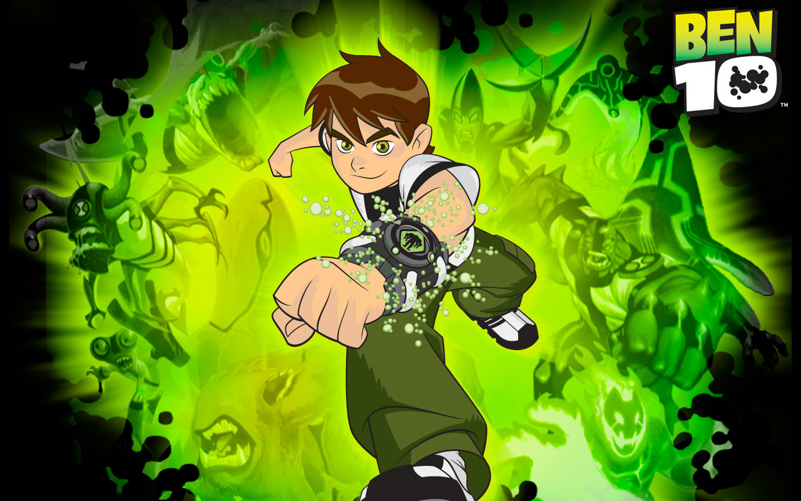

About Ben
Ben is a cool superhero who can turn into aliens. He does this with his watch, called the omnitrix.
Ben and his different alien transformations
Some of the villains he fights
- Dr. Animo
- Hex
- Vilgax
Ben's Aliens
Here are some of Ben's most iconic alien heros. Click on the links below to learn more about them: